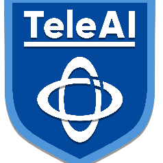
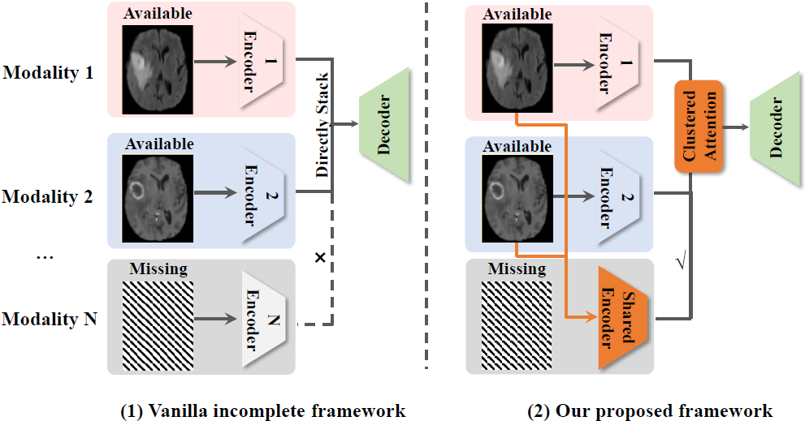
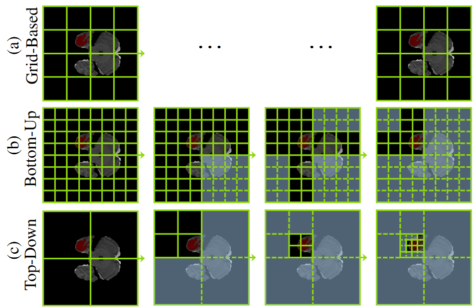
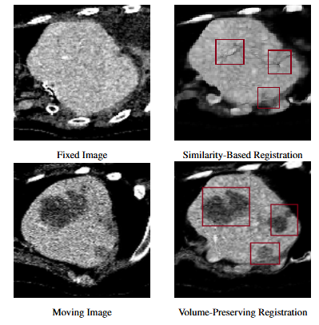
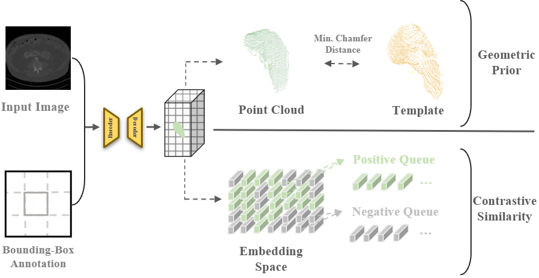
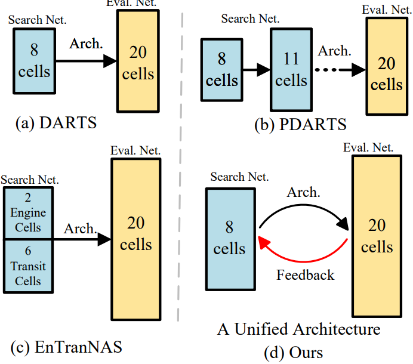
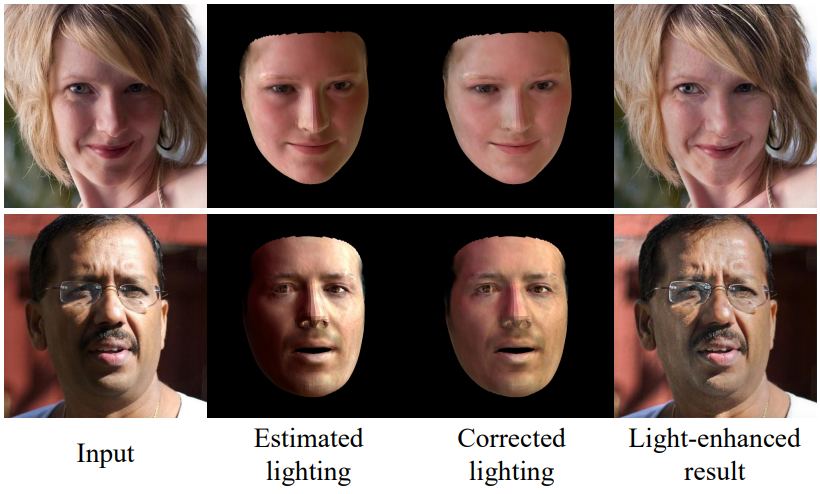
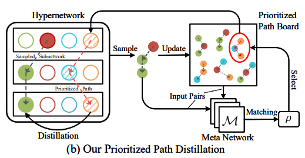

Sep 23, 2026 — Present
Researcher · AI Infra
Institute of Artificial Intelligence, China Telecom (TeleAI)
- Generative AI infrastructure for diffusion models and world models.
- Infrastructure acceleration for Telefuser (ongoing).
Researcher · AI Infra Group
dh10@chinatelecom.cn
Email / GitHub / Google Scholar / CV
Institute of Artificial Intelligence, China Telecom (TeleAI)
I recently joined the AI Infra group at TeleAI, the Institute of Artificial Intelligence, China Telecom, as a Researcher. I focus on generative AI infrastructure, particularly systems for diffusion models and world models. Previously, I worked at Huawei 2012 Lab on inference optimization and in-network computing, and held research internships at Microsoft Research Asia, Momenta, and SenseTime.
I received my Ph.D. in Computer Science from City University of Hong Kong in 2025, advised by Prof. Jing Liao at City University of Hong Kong and Prof. Yan Xu at Beihang University. I earned my B.S. in Software Engineering from the University of Electronic Science and Technology of China in 2019.
My research focuses on efficient and scalable infrastructure for generative models, spanning language models, diffusion models, and world models. Building on my experience in sparse attention, KV-cache systems, and collective communication, I aim to bring model capabilities into practical systems with lower computational cost and latency. I am currently working on infrastructure acceleration for Telefuser; this project is ongoing.

Sep 23, 2026 — Present
Institute of Artificial Intelligence, China Telecom (TeleAI)
Nov 2025 — Sep 8, 2026
Senior Research Engineer / Researcher
Jan 2025 — Oct 2025
Research Intern

Jan 2019 — Jan 2021
Research Intern
Oct 2018 — Jan 2019
Research Intern
Surveyed model compression and acceleration methods and reproduced DropBlock in a Caffe-based training framework.
Jan 2018 — Jul 2018
Research Intern
Reproduced Deep Gradient Compression and online distillation methods for distributed deep learning.

JBHI · 2025
Hao Du, Qihua Dong, Yan Xu, Jing Liao
A framework for incomplete-modality medical imaging based on contrastive feature extraction and shared-unique clustered attention.

JBHI · 2025
Hao Du, Qihua Dong, Yan Xu, Jing Liao
Top-down token generation for 3D medical image segmentation.

ICCV · 2023
Qihua Dong*, Hao Du*, Yan Xu, Jing Liao
Preserving tumor volume during the registration of 3D medical images without supervision.

TMI · 2023
Hao Du, Qihua Dong, Yan Xu, Jing Liao
Learning robust 3D segmentation from weak supervision using geometric priors and contrastive similarity.

TPAMI · 2022
Hongyuan Yu, Houwen Peng, Yan Huang, Jianlong Fu, Hao Du, Liang Wang, Haibin Ling
A cyclic differentiable architecture search framework with joint optimization objectives.

CGF · 2021
Fangzhou Han*, Can Wang*, Hao Du, Jing Liao

NeurIPS · 2020
Houwen Peng*, Hao Du*, Hongyuan Yu*, Qi Li, Jing Liao, Jianlong Fu
See my Google Scholar profile for the complete publication list.